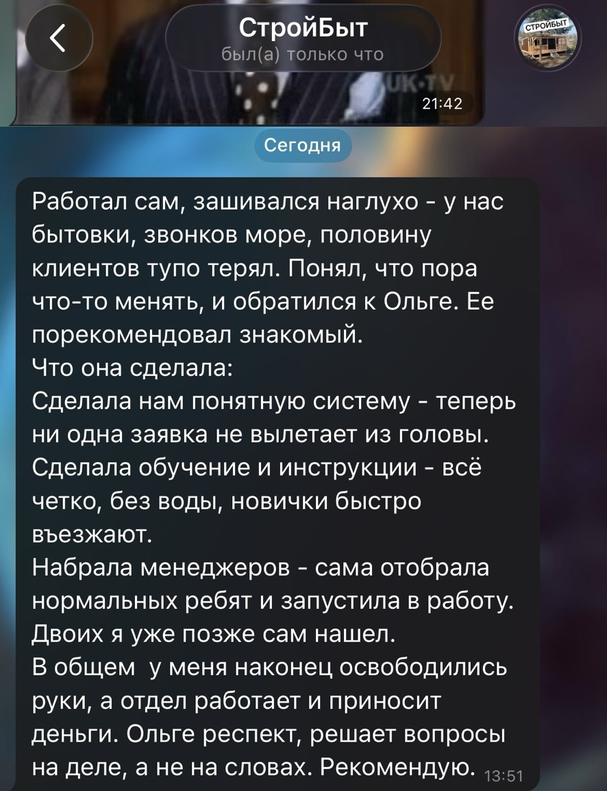

Выстроен процесс продаж
Определяем воронку и этапы работы с клиентом: от первого контакта до сделки. Фиксируем, что происходит на каждом этапе, план продаж и ключевые показатели.
Когда пора передать продажи команде?
Если сейчас вы сами продаёте, ведёте клиентов и контролируете сделки, а времени на всё уже не хватает, пора подумать, как систематизировать продажи и передать эту работу команде.
Состав отдела и процессы зависят от ниши вашего бизнеса. Поэтому я не собираю отдел продаж по готовому шаблону: сначала определяем, как именно у вас должна работать вся система.
Определяем воронку и этапы работы с клиентом: от первого контакта до сделки. Фиксируем, что происходит на каждом этапе, план продаж и ключевые показатели.
CRM отражает реальный процесс: воронки, этапы, задачи, данные и контроль настроены под работу будущего отдела.
Определяем, сколько сотрудников нужно, какие функции они выполняют и кого именно нужно нанять.
Подготовлены скрипты, регламенты, инструкции, система обучения, планы, KPI и мотивация.
Понятно, какие показатели контролировать, как оценивать работу сотрудников и где видеть отклонения от плана.
Продажи, CRM, команда, правила работы и контроль собраны в одну систему, которой можно управлять и которую можно дальше развивать.
Сотрудники понимают, что продавать, как работать с клиентом, где вести сделки, какие правила соблюдать и по каким показателям оценивается результат.
Есть стабильный поток клиентов или понятный канал их привлечения.
Продаж стало достаточно, чтобы выделить их в отдельную функцию.
Есть бюджет на найм и содержание команды на период запуска.
Знания о продукте и клиентах можно передать новым сотрудникам.
Ниша или продукт ещё постоянно меняются, а спрос не подтверждён.
Непонятно, откуда будут приходить потенциальные клиенты.
Нет бюджета на найм и содержание команды в период запуска.
Расчёт строится на том, что новый менеджер сам найдёт клиентов и сразу окупит себя.
Задача отдела продаж - продавать, а не создавать спрос и поток клиентов с нуля. За привлечение потенциальных клиентов отвечает маркетинг: штатный маркетолог, отдел маркетинга, подрядчик или отдельный канал лидогенерации.
Это может быть реклама, Avito, партнёрские каналы, холодная лидогенерация или другой источник. До формирования команды должно быть понятно, откуда менеджеры будут получать лиды или базу для работы.
Количество менеджеров определяем исходя из реального объёма лидов или базы и нагрузки на команду.
Менеджер работает внутри выстроенной системы: получает лиды или базу для работы, ведёт клиентов по процессу компании, работает по понятным правилам, отвечает за результат и получает за него вознаграждение.
«Только процент, клиентов ищи сам» - это другая модель работы. Как дополнительный канал продаж агентская сеть имеет место быть, но в основе отдела продаж я такую систему не строю.
Разбираю ваш бизнес, продукт, текущие продажи, источники клиентов, планы и ограничения.
Определяю состав команды, роли, процессы и показатели. Формирую дорожную карту проекта.
Выстраиваю процессы продаж, готовлю скрипты, регламенты, инструкции, мотивацию и контроль, настраиваю CRM под работу отдела.
Определяю требования к сотрудникам, провожу отбор и готовлю менеджеров к работе.
Запускаю отдел в работу, контролирую первые результаты и корректирую систему по ходу работы.
У меня периодически есть менеджеры в резерве, поэтому сначала смотрю, можем ли закрыть позицию своими силами. Но я не кадровое агентство и не обещаю, что в нужный момент в резерве окажется подходящий человек именно под ваш продукт, график и условия.
Если подходящего кандидата нет, организуем поиск: могу разместить вакансию и провести первичный отбор, работать вместе с вашим HR или при необходимости подключить отдельного специалиста по подбору.
С моей стороны - определение профиля менеджера, проведение собеседований и оценка кандидатов, обучение, аттестация и вывод выбранных сотрудников в работу.
Расходы на площадки для поиска и услуги отдельного HR, если он потребуется, оплачиваются отдельно и заранее согласовываются.
Основной поток шёл с Avito. Собственник долго продавал сам, позже появился один помощник. Параллельно запустили направление блок-контейнеров, нагрузка выросла, а увеличивать рекламу стало бессмысленно: новые лиды уже некому было нормально обрабатывать. Когда помощник в один из сезонов не вышел на работу, стало особенно видно, насколько хрупкой была схема.
Нужно было перестать держать продажи на собственнике и одном человеке и создать систему, в которую можно постепенно вводить менеджеров. Спроектировали процесс продаж, внедрили CRM и воронку, подготовили правила работы и обучение по продукту, настроили мотивацию, отчётность и контроль, начали выводить менеджеров в работу.
Продажи перестали быть конструкцией, завязанной только на собственнике и одном помощнике. Появилась система, в которую можно вводить новых менеджеров. В рамках запуска были выведены первые сотрудники, впоследствии команда выросла до четырёх человек.

Я не заканчиваю работу в день, когда менеджеры впервые выходят на линию. Финальный этап проекта отвожу на проверку системы в реальной работе: смотрю первые результаты, работу менеджеров, сделки и то, что требует корректировки.
После этого проект завершается, и отдел продолжает работать уже внутри вашего бизнеса. Если вам нужен дальнейший контроль и управление, я могу остаться на сопровождении.
Если не хотите сразу оставаться с новым отделом один на один, можно продолжить работу в формате регулярного сопровождения.
Сопровождение отдела продажТочная стоимость и срок зависят от сложности проекта и фиксируются до начала работы.
Дополнительно могут оплачиваться услуги HR, размещение вакансий, лицензии и сторонние сервисы. Все дополнительные расходы согласовываются заранее.
Обсудить проектОт 2 месяцев. До начала работы составляю дорожную карту проекта, определяю сроки и фиксирую их.
Стоимость работы - от 150 000 ₽ в месяц. Итоговая стоимость зависит от сложности и продолжительности проекта и определяется до начала работ.
То есть до старта вы знаете и срок, и бюджет проекта целиком.
Если я неверно рассчитала объём или сроки и не укладываюсь в согласованную дорожную карту, доделываю проект без дополнительной оплаты.
Если сроки сдвигаются по вине клиента - например, задерживаются согласования, материалы, доступы или оплата необходимых сервисов, - дополнительное время оплачивается отдельно.
Работу с холодной базой при необходимости можно заказать у меня отдельно.
Если нужен дополнительный трафик - Яндекс, Авито, работа с конкурентными базами и другие каналы - могу подключить проверенных партнёров. Это не обязательное условие: можно работать с вашим маркетологом, агентством или другими специалистами.
Полностью устраниться не получится. На старте мне понадобятся информация о продукте и компании, материалы, доступы и ваше участие в ключевых решениях.
Построить систему без участия собственника невозможно.
Да. Все проекты веду только удалённо. Созвоны, работа с CRM, найм, обучение, запуск команды и контроль проходят онлайн.
Гарантирую результат в рамках своей зоны ответственности: к завершению проекта у вас будет работающий отдел продаж в том составе и с той системой, которые мы согласовали до старта.
Строю классические отделы продаж для B2B- и B2C-компаний, где менеджер работает с клиентом внутри выстроенной системы: получает лиды или базу, ведёт сделку по процессу компании и отвечает за результат.
Не беру проекты, где сама механика продаж находится за пределами моей специализации: маркетплейсы, инфобизнес, криптовалютные проекты и продажи, построенные преимущественно на массовых автоматических сообщениях вместо классической работы менеджера с клиентом.
Если у вас онлайн-школа - напишите. Сама такие проекты не веду, но могу порекомендовать хорошего специалиста по этому направлению.